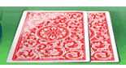

24 |
Basic Rules |
 |
Texas Hold ‘Em Poker is a community card game with four betting rounds. One player acts as the dealer. This position is called the button and it rotates clockwise after every hand.
The two players to the left of the dealer are the small blind and the big blind, respectively. They are the only players who have money in the pot before the cards are dealt.
Every player receives two face-down cards called hole cards.  The first betting round begins with the player sitting immediately to the left of the big blind and continues clockwise. When the first betting round is complete, three community cards called the flop are flipped face up on the table.
The second round of betting begins with the first remaining player seated to the left of the button. Betting resumes clockwise. When the second round of betting is finished, a fourth community card called the turn is flipped face up on the table.
The third round of betting starts with the first remaining player sitting to the left of the button. Betting proceeds clockwise. When the third round of betting is over, a fifth community card called the river is flipped face up on the table.
The fourth round of betting starts with the first remaining player seated to the left of the button. Betting continues to move clockwise. Players must combine their hole cards with the community cards to make the best possible five-card poker hand. It is possible to use both hole cards, one hole card or no hole cards (play the board) to make a hand. The best possible five-card poker hand wins the pot. See the Hand Ranking section for more details on this. Each player has a limited time to make his or her move during online games in order to not stall the game. Note: Many players will try to bluff you into folding or calling their excellent hand. Others will just stick to the odds and always play it safe, waiting for a monster hand. To learn more Poker tricks and tips, we recommend that you refer to the ‘Game Tips’ section. |


 |
 |
 |